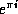

Common Lisp the Language, 2nd Edition
The integer data type is intended to represent mathematical integers. Unlike most programming languages, Common Lisp in principle imposes no limit on the magnitude of an integer; storage is automatically allocated as necessary to represent large integers.
In every Common Lisp implementation there is a range of integers that are represented more efficiently than others; each such integer is called a fixnum, and an integer that is not a fixnum is called a bignum. Common Lisp is designed to hide this distinction as much as possible; the distinction between fixnums and bignums is visible to the user in only a few places where the efficiency of representation is important. Exactly which integers are fixnums is implementation-dependent; typically they will be those integers in the range to , inclusive, for some n not less than 15. See most-positive-fixnum and most-negative-fixnum.

X3J13 voted in January 1989
(FIXNUM-NON-PORTABLE)
to specify that fixnum must be a supertype
of the type (signed-byte 16), and additionally that the value
of array-dimension-limit must be a fixnum (implying that the implementor
should choose the range of fixnums to be large enough to accommodate the
largest size of array to be supported).

Integers are ordinarily written in decimal notation, as a sequence of decimal digits, optionally preceded by a sign and optionally followed by a decimal point. For example:
0 ;Zero -0 ;This always means the same as 0 +6 ;The first perfect number 28 ;The second perfect number 1024. ;Two to the tenth power -1 ; 15511210043330985984000000. ;25 factorial (25!), probably a bignum
Integers may be notated in radices other than ten. The notation
#nnrddddd or #nnRddddd
means the integer in radix-nn notation denoted by the digits ddddd. More precisely, one may write #, a non-empty sequence of decimal digits representing an unsigned decimal integer n, r (or R), an optional sign, and a sequence of radix-n digits, to indicate an integer written in radix n (which must be between 2 and 36, inclusive). Only legal digits for the specified radix may be used; for example, an octal number may contain only the digits 0 through 7. For digits above 9, letters of the alphabet of either case may be used in order. Binary, octal, and hexadecimal radices are useful enough to warrant the special abbreviations #b for #2r, #o for #8r, and #x for #16r. For example:
#2r11010101 ;Another way of writing 213 decimal
#b11010101 ;Ditto
#b+11010101 ;Ditto
#o325 ;Ditto, in octal radix
#xD5 ;Ditto, in hexadecimal radix
#16r+D5 ;Ditto
#o-300 ;Decimal -192, written in base 8
#3r-21010 ;Same thing in base 3
#25R-7H ;Same thing in base 25
#xACCEDED ;181202413, in hexadecimal radix